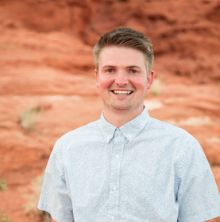
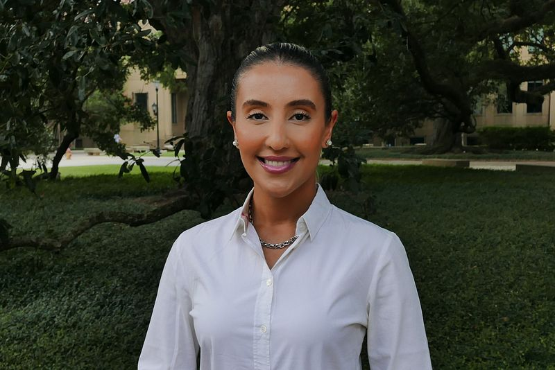
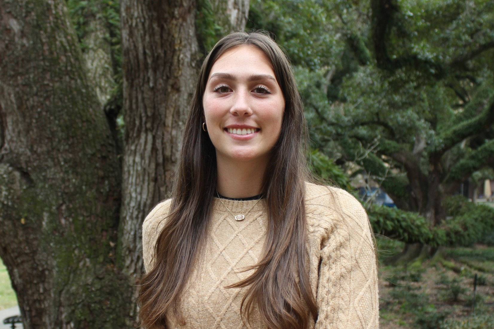

Location
Audubon Hall, Rooms 9 & 10
Louisiana State University
Baton Rouge, LA 70803
The Risk & Decision Making Laboratory — Louisiana State University
The science of how people make risky choices at work and life.
Est. 2016 — Baton Rouge, LA
Founded in 2016 by Dr. Don Zhang, the Risk and Decision Making Lab is housed in Louisiana State University, Department of Psychology. We conduct research on how people make decisions at work, with a focus on risk and decision making. Our mission is to understand the cognitive, personality, and organizational influences on decision making at work. We are committed to conducting rigorous, high-quality research that has practical implications for organizations and individuals.
Founded — 2016
Field — I/O Psychology
Home — Audubon Hall, LSU
Output — Studies, scales & meta-analyses
We study how individual differences in risk propensity affect outcomes at work and in life — both the bright side of risk (e.g., creativity) and the dark side (e.g., deviance).
We apply cognitive and decision models to how people make decisions at work.
We develop and advocate for evidence-based tools and methods for identifying, recruiting, and placing talent at work.
We use consumer-friendly methods to communicate scientific evidence and deliver evidence-based findings to relevant stakeholders.
We use modern LLMs to understand psychological mechanisms underlying decision-making processes at work.
We study the replicability of scientific research and how to conduct research that is robust, reproducible, and trustworthy.
General Risk Propensity Scale — a validated measure of individual differences in risk-taking propensity across domains. Free to use
Learn moreCalculated and Spontaneous Risk-Taking Scale — a dual-process based measure of general risk-taking preferences. Free to use
Learn moreRisk Propensity at Work Meta-Analysis — a comprehensive meta-analytic investigation of the construct validity of risk propensity at work, integrating decision science and large language models.
Learn morePrincipal Investigator · Associate Professor

Tyler Cowley PhD Student — Sixth Year
Niloufar (Nilou) Dodangeh PhD Student — Second Year
Abby Martin Undergraduate RAWe're always looking for talented individuals and collaborators. Whether you're interested in joining our lab, participating in research, or partnering with us, we'd love to hear from you.
Audubon Hall, Rooms 9 & 10
Louisiana State University
Baton Rouge, LA 70803
zhang1@lsu.edu
General inquiries & collaborations
Hands-on experience with literature reviews, data analysis, experiment design, and manuscript preparation. GPA 3.5+, 3–6 hrs/week, two-semester minimum.
We're accepting graduate applications from students interested in risk-taking, decision-making, and employee selection research. Intense curiosity, evidence-driven mindset, self-starter attitude.
Volunteer for online surveys, laboratory experiments, and decision-making tasks. Compensation $10–$40 per study, 30–90 minutes.
Applied research, employee selection tools, risk assessment practices, and decision-making workshops. Consulting, tool development, workshops.